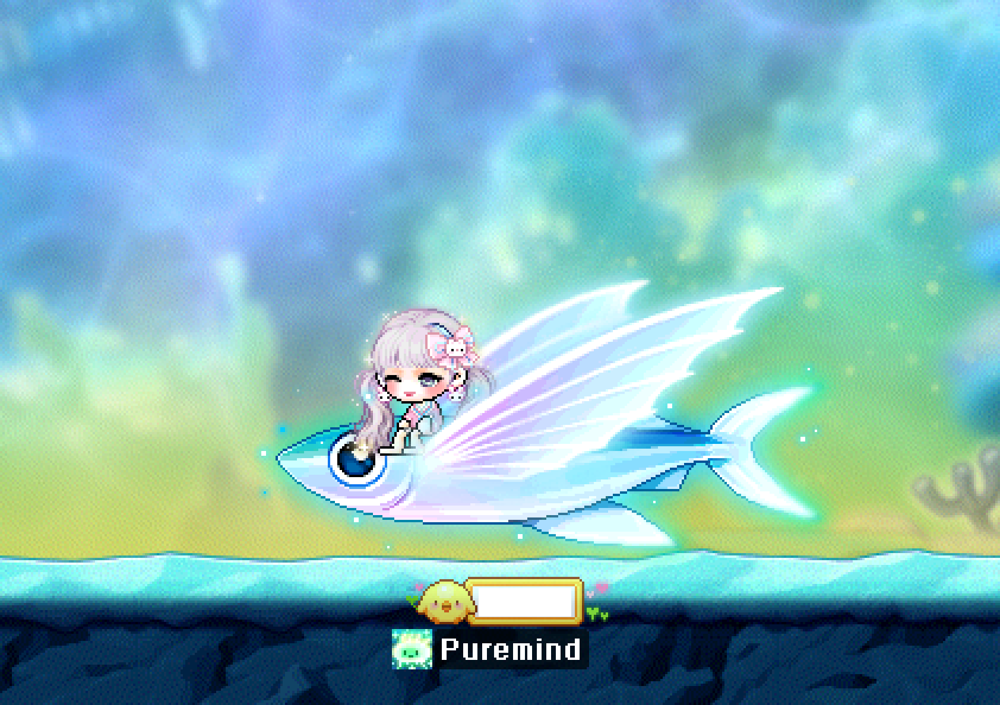
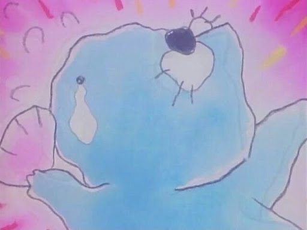
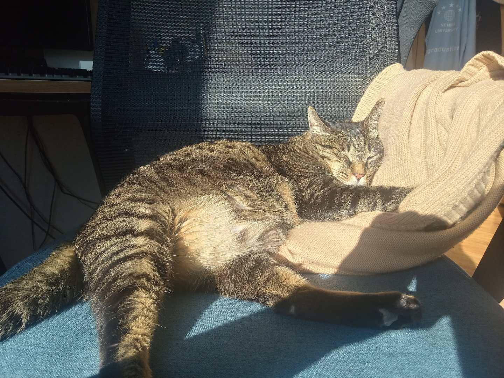
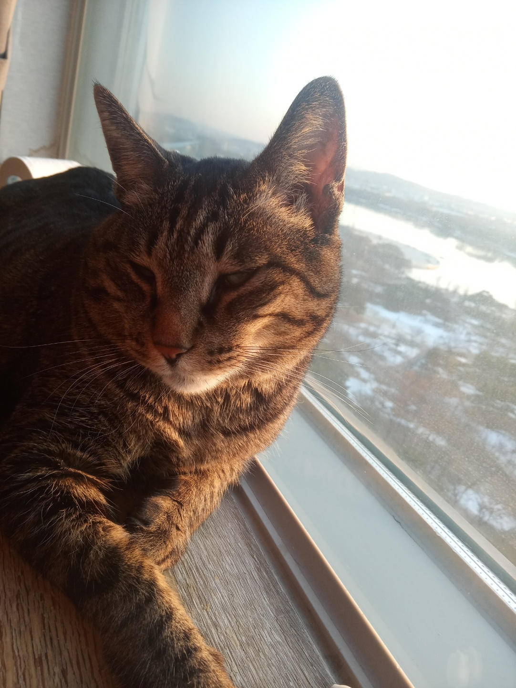
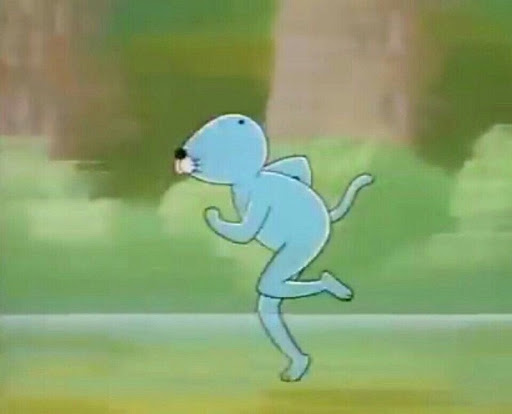

안녕하세요! 갑자기 보노보노가 나와서 당황스러웠죠? 제가 가장 좋아하는 캐릭터가 보노보노인지라 보노보노를 통해 제 소개로 올 수 있도록 해보았습니다.
제 소개로 들어가기전 가볍게 보노보노를 좋아하는 이유에 대해 설명해 보겠습니다.
일단 친구들 사이에서 제 별명이 보노보노입니다! 중학생때 파란색 후드집업을 자주 입고 행동이 느린편이며 멍을 자주 때려 보노보노라는 별명을 갖게 되었습니다.보노보노라는 캐릭터는 제 기억속에선 그저 느릿느릿해서 답답한 아이였고 보노보노라는 별명이 싫기도 했습니다. 그러다 보노보노에 관한 책도 나오고 보노보노 애니메이션이 새롭게 나온다는 소식이 들려오자 이번기회에 한번 찾아보자 라는 생각으로 간만에 투니버스도 켜보고 서점에서 만화책도 찾아보았습니다. 읽고나서 깨달았습니다. 보노보노의 내용은 생각보다 철학적이었고 느린삶에 대해 작가가 보노보노를 통해 이야기 하고자 하는구나 단순히 아동용 애니메이션 취급을 받기엔 너무나도 좋은 작품이었습니다. 보노보노에 대해 단순히 나쁘게만 생각했던것을 고쳐먹고 저의 느린 행동도 좋게만 느껴졌습니다. 그 이후 저의 별명인 보노보노를 저는 좋아합니다.
<Family>
사진이 나와도 된다고 허락한건 고양이밖에 없어 고양이만 설명하고 넘어가겠습니다!가족구성원으로는 아버지 어머니 오빠 고양이가 있습니다. 그 중 고양이에 대해 상세히 설명할건데요. 이름은 '냥이'로 이름에 대한 비하인드 가 있습니다.비하인드가 궁금하시면 클릭해서 확인해주세요. 냥이는 초6때부터 저와 함께하였습니다. 처음에는 단순히 사료를 먹을때조차 눈치를 많이 봤는데 요즘엔 간식 안주면 화를 냅니다. 작년부터는 무릎위에 올라와 앉아있기 시작했습니다. 이걸 작성하고 있는 지금도 무릎위에 올라와 골골송을 부르고 있습니다. 냥이가 눈치를 많이 보는것같아 조금 서운할때도 있었지만 지금은 냥이도 우리 가족을 편히 생각하고 있는것 같아 기쁩니다. 혹여나 고양이를 무서워하시거나 고양이 사진을 보기 싫어할수도 있을거 같아 책갈피를 해놓았습니다ㅎㅎ 보고싶으시다면 눌러주세요! [고양이]
Maplestory
한번쯤은 들어보셨을법한 게임인 메이플스토리를 저는 즐겨했었습니다. 지금은 생각날때마다 한번씩 들어가는 정도로 들어가고 있습니다. 캐릭터도 열심히 꾸며보았고 친구에게 같이하자고 권유하며 친구와 함께 보스를 잡기도 하였습니다. 캐릭터가 점차 강해지는것을 보며 뿌듯함을 느끼고 새로운 보스를 잡을때마다 성장하는게 눈에 보여 즐거웠습니다. 이제는 별로 하진 않지만 저의 추억으로 자리잡은 게임입니다.
<etc>
이곳은 나머지 저의 잡다한 정보를 적어보고자 마련하였습니다. 저는 요즘 유튜브로 요리하는걸 즐겨 봅니다. 주로 보는 사람들은 승우아빠와 yedy101로 자주 찾아봅니다.사진을 클릭하면 바로 이동하실수 있게 해놨습니다.

<승우아빠>
<yedy101>
냥이 사진입니다!
 
봐주셔서 감사합니다! 맨위로 올라가고자 한다면 밑에 이미지를 눌러주세요!
